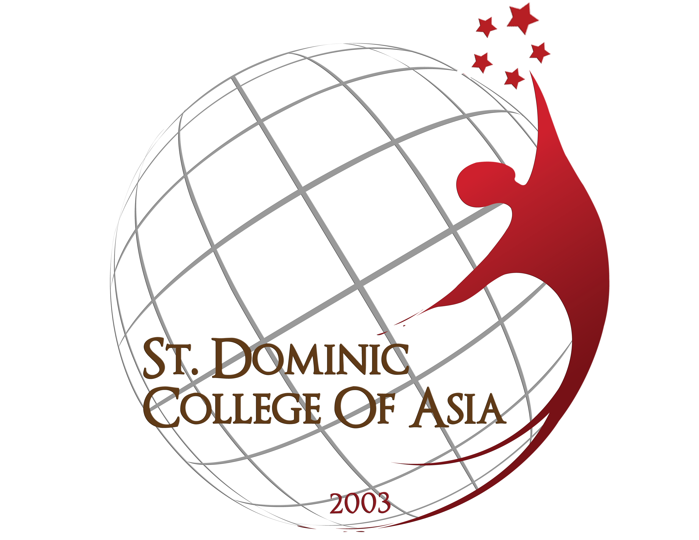

OUR SCHOOL
St. Dominic College of Asia
Learn more about the educational institution where the DOMINEXUS research project was developed.

St. Dominic
College of Asia
Bacoor, Cavite
ABOUT SDCA
A Community of Learning and Growth
St. Dominic College of Asia (SDCA) is an educational institution located in Bacoor, Cavite.
The institution provides students with opportunities to develop their academic knowledge, skills, leadership, creativity, and sense of community.
Through different academic programs, student activities, and organizations, students are encouraged to participate in experiences that support their personal and professional development.
DOMINEXUS & SDCA
Supporting Student Organizations
DOMINEXUS was proposed as an attendance management system for student organizations of St. Dominic College of Asia.
The project focuses on providing a more organized approach to recording general meeting attendance, monitoring participation, and maintaining student attendance records.
STUDENT COMMUNITY
Student Organizations
Student organizations provide opportunities for students to participate, collaborate, and develop leadership skills.
Leadership
Students can develop leadership and organizational skills through active involvement.
Collaboration
Organizations encourage students to work together toward common goals.
Participation
Student activities allow members to actively participate in the school community.
STUDENT DEVELOPMENT
Beyond the Classroom
Academic Development
Encouraging students to expand their knowledge and skills.
Leadership
Providing opportunities for students to take responsibility and lead.
Community
Building cooperation and meaningful connections among students.
Learn more about DOMINEXUS
Explore the system and access your student account.